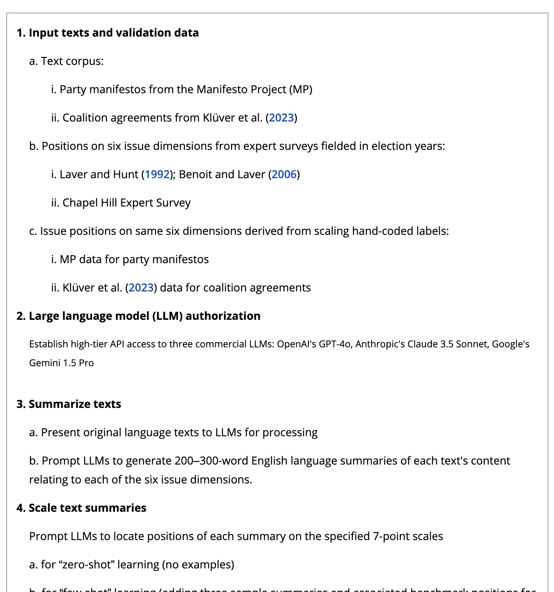
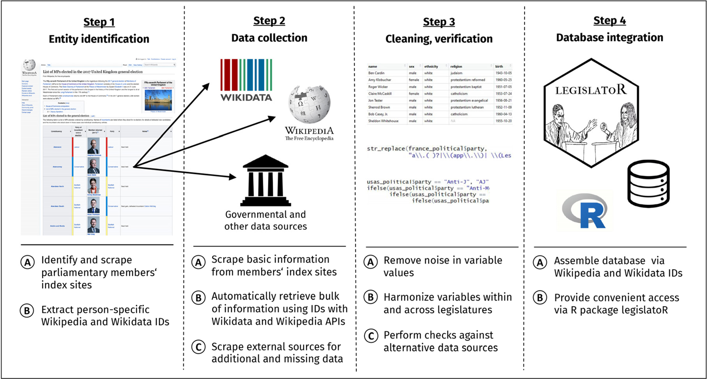
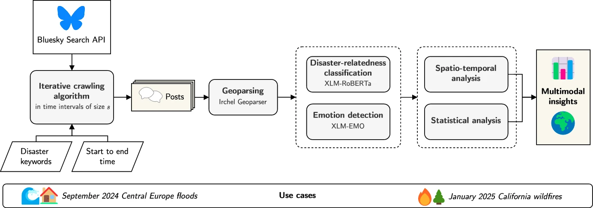
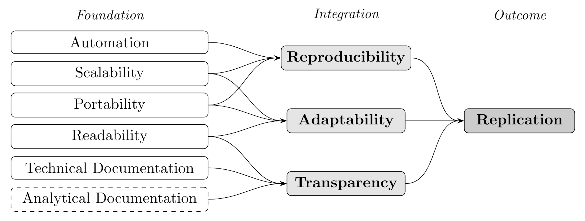
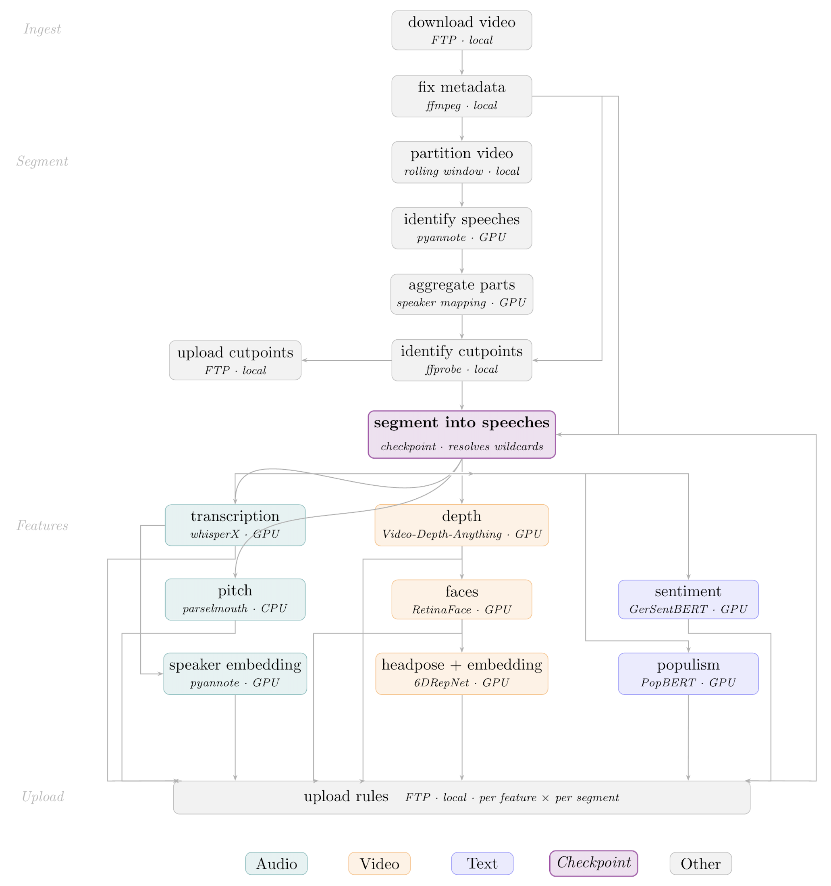
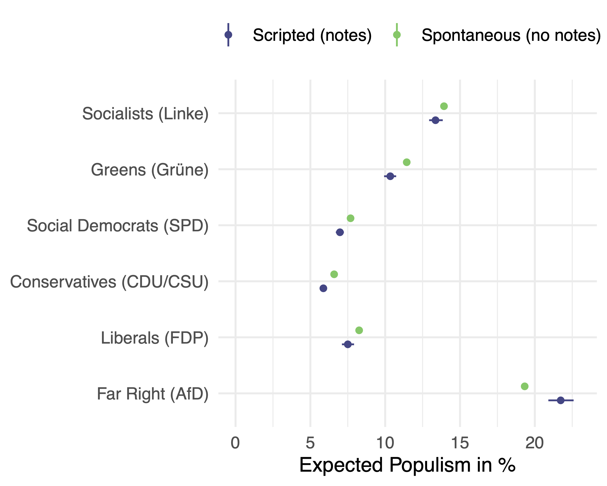

8th Annual COMPTEXT Conference (April 23-25, 2026) | University of Birmingham, UK
TU Darmstadt
University of Birmingham

(Benoit et al., 2026)
(Göbel and Munzert, 2018)
(Hanny et al., 2025)
CSS pipelines have grown:
But replication infrastructure has not kept pace: mostly still a collection of standalone scripts run by hand.
Together, these issues prevent what King (1995) demands: sufficient information for a third party to understand, evaluate, and extend the work.
A WMS represents a pipeline as an explicit DAG: each step declares its inputs and outputs while the system enforces order, detects stale outputs, and manages environments automatically.
Why Snakemake?
...
json=SPEECHES / "{parliament}" / "{filename}" / "features" /
"{base}_{segment}_depth.json",
script: "scripts/generate_video_feature_depth.py"
rule generate_video_feature_faces:
input:
video=SPEECHES / "{parliament}" / "{filename}" / "videos" /
"{base}_{segment}.mp4",
depth_json=SPEECHES / "{parliament}" / "{filename}" / "features" /
"{base}_{segment}_depth.json",
output:
json=SPEECHES / "{parliament}" / "{filename}" / "features" /
"{base}_{segment}_faces.json",
script: "scripts/generate_video_feature_faces.py"
rule generate_video_feature_headpose:
input:
faces_json=SPEECHES / "{parliament}" / "{filename}" / "features" /
"{base}_{segment}_faces.json",
...
Automation
Portability
conda: directive pins the exact software environment per rulesingularity:/apptainer: enables full container supportThe two most common causes of replication failure (Eubank 2016)
Wrong execution order & Environment/version inconsistency
Snakemake resolves both issues structurally, not through researcher discipline. Without additional documentation effort, a Snakemake project automatically satisfies the REP framework (Stodden et al., 2016).
Without accessible scaling infrastructure, studies are designed to fit a laptop. In turn, this removes the incentive to invest in scaling infrastructure.
With Snakemake, the same workflow definition runs on different environments with a single config change:
| Without WMSS | With WMS |
|---|---|
| Prototype locally, manually port to HPC | Same file, one config |
| Ad-hoc Virtual Machine deployment | Portable, parallelised, reproducible |
| Studies limited by laptop RAM | Much more resources due to HPC portability |
Technical Documentation (automatic)
Analytical Documentation (structured)
config.yaml provides a machine-readable location for all analytical parametersThe corpus
Performance with Snakemake
~4 min 20 sec end-to-end for 1 hour of raw video

Research question
Does populist rhetoric emerge organically in unscripted speech, or is it prepared in advance?
Gaze direction reveals delivery mode: looking at notes = scripted; looking at audience = more spontaneous.
Key findings

WMS are an implicit implementation of the replication framework the discipline has long dicussed:
Together, they fulfil what King (1995) demanded: sufficient information for a third party to understand, evaluate, and extend the work.
Introducing Workflow Management to CSS | 8th Annual COMPTEXT Conference (April 23-25, 2026) | April 25, 2026